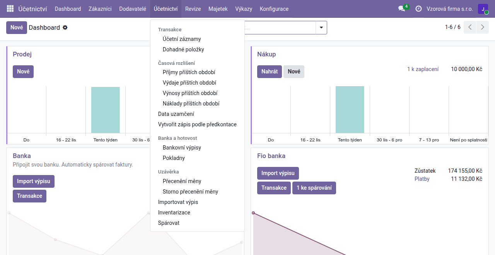
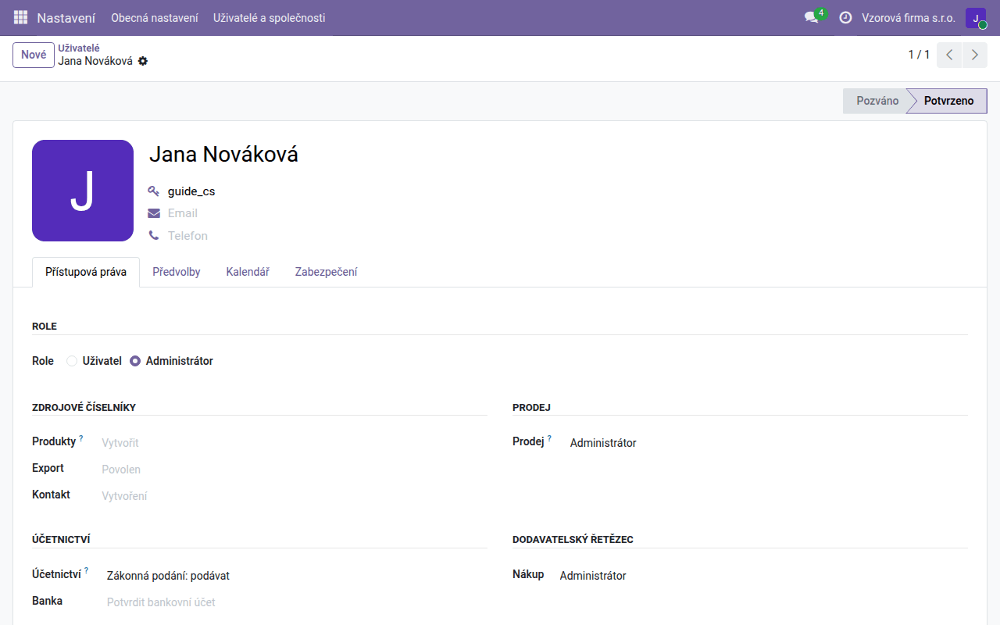
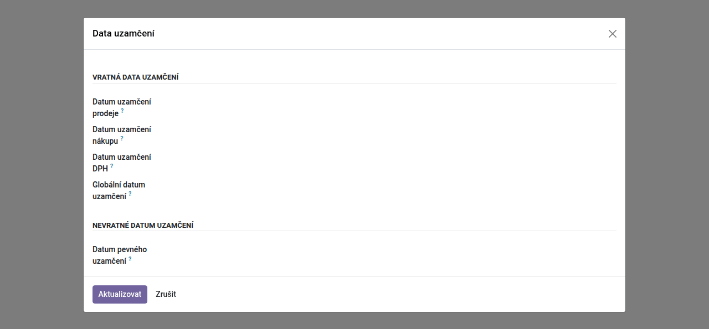

Návod k úloze
Odoo pro českého účetního
Kde v Odoo najdete to, co znáte z českého účetnictví — menu, role uživatelů a slovník od účetního dokladu po saldokonto.
| Země | Česko |
|---|---|
| Edice | Odoo Community |
| Zahrnuje | account, account_usability, account_lock_date_update, l10n_cz_datadance, l10n_cssk_internal_document, l10n_cssk_payment_symbols, l10n_cssk_partner_balances, l10n_cz_account_move_template, l10n_cz_account_cutoff, l10n_cz_fiscal_year_closing, l10n_cz_fs, account_reconcile_oca, account_asset_management, account_financial_report, l10n_cssk_account_financial_report, analytic |
K čemu tento návod slouží
Odoo vzniklo pro mezinárodní publikum a na obrazovkách používá vlastní pojmenování věcí, které český účetní léta zná pod jinými jmény. Nic podstatného nechybí — podvojné účetnictví podle zákona o účetnictví se do Odoo přenáší bez potíží — ale cesta není na první pohled zřejmá. Tento návod je mapa: kde jsou menu, kdo smí co dělat a slovník od českého pojmu k obrazovce v Odoo. Ostatní návody k úlohám na něj navazují.
Popisuje Odoo Community s českou lokalizací a uvádí názvy tak, jak je vidí uživatel s českým jazykem.
Aplikace Účetnictví
Všechno, o čem tento návod mluví, je v aplikaci Účetnictví. Její menu:
| Menu | Co v něm najdete |
|---|---|
| Zákazníci | vystavené faktury (Faktury), opravné daňové doklady, zálohové faktury, přijaté platby, odsouhlasení zůstatků, zákazníky |
| Dodavatelé | přijaté faktury, přijaté dobropisy (na obrazovce Dopropisy přijaté), přijaté zálohové faktury, platby a platební příkazy, dohody o zápočtu, dodavatele |
| Účetnictví | účetní záznamy, časové rozlišení a dohadné položky, zápisy podle předkontace, bankovní výpisy (importované nebo zadané ručně) a pokladny, párování, data uzamčení, přecenění měny, inventarizaci |
| Revize | všechny účetní položky a auditní záznamy |
| Majetek | dlouhodobý majetek a jeho odpisy |
| Výkazy | hlavní knihu, předvahu, knihu deníku, otevřené položky; účetní závěrku a daňová přiznání; manažerské výkazy |
| Konfigurace | nastavení, účtovou osnovu, daně, účetní deníky, fiskální pozice, analytické účetnictví, tabulky CZ/SK lokalizace a Návody |

Kdo smí co dělat
Co uživatel vidí, určuje jeho role v Účetnictví (Nastavení → Uživatelé a společnosti → Uživatelé, karta Přístupová práva):
| Role | Může |
|---|---|
| Fakturace | vystavovat a přijímat faktury a zadávat platby — bez účetních záznamů a knih |
| Pouze pro čtení | vidět celé účetnictví, nic neměnit |
| Účetní | zaúčtovat doklady a účetní záznamy, párovat, spouštět výkazy |
| Hlavní účetní | vše uvedené a navíc konfiguraci: účtovou osnovu, daně, deníky, nastavení |

Lokalizace přidává dvě role pro zákonná podání — Zákonná podání: připravovat a Zákonná podání: podávat — aby podání mohlo zůstat u účetního, i když přiznání připravuje někdo jiný.
Slovník
| Znáte jako | V Odoo | Kde |
|---|---|---|
| účetní doklad | účetní záznam — každá faktura, platba i interní doklad je jeden záznam | Účetnictví → Účetnictví → Transakce → Účetní záznamy |
| účetní zápis (řádek MD / D) | účetní položka | Účetnictví → Revize → Kontrola → Účetní položky |
| účtový rozvrh | Účtová osnova | Účetnictví → Konfigurace → Účetnictví → Účtová osnova |
| syntetický / analytický účet | kód účtu: česká osnova má šest číslic (604000); analytický účet je prostě další kód (604001) | totéž |
| deník (chronologický) | výkaz Kniha deníku | Účetnictví → Výkazy → Účetní výkazy OCA → Kniha deníku |
| kniha dokladů, číselná řada | účetní deník: Prodej, Nákup, Banka, Ostatní účetní operace… každý s vlastním číslováním | Účetnictví → Konfigurace → Účetnictví → Účetní deníky |
| hlavní kniha | Hlavní kniha | Účetnictví → Výkazy → Účetní výkazy OCA |
| obratová předvaha | Předvaha | totéž |
| saldokonto | Otevřené položky a Saldo dle splatnosti | totéž |
| odsouhlasení zůstatků | Odsouhlasení zůstatků | Účetnictví → Zákazníci |
| zápočet | Dohody o zápočtu | Účetnictví → Dodavatelé |
| párování úhrad | Spárovat: řádky bankovních výpisů a otevřené položky se párují navzájem | Účetnictví → Účetnictví → Spárovat |
| interní doklad | účetní záznam v deníku Ostatní účetní operace, vytištěný jako interní doklad | Účetní záznamy → Nové; tisk přes ozubené kolečko ⚙ → Tisk → Interní / interný doklad |
| předkontace | u faktur účet na produktu nebo kategorii produktu, který přestaví fiskální pozice (tuzemsko, EU, vývoz); u interních dokladů účetní vzory | Konfigurace → Účetnictví → Fiskální pozice; Účetnictví → Účetnictví → Vytvořit zápis podle předkontace |
| zaúčtovat | Potvrdit na faktuře, Zaúčtovat u ostatních záznamů; do té doby je doklad Návrh | tlačítko na dokladu |
| opravný daňový doklad, dobropis | Dobropis u faktury; Vytvořit opravný doklad u jiného zaúčtovaného záznamu | tlačítko na dokladu |
| storno minusem | nastavení Storno účetnictví (storno mínusovým zápisem): storno zápornou částkou na téže straně | Konfigurace → Nastavení |
| DUZP (datum uskutečnění zdanitelného plnění) | pole DUZP na faktuře; Datum zaúčtování je den zaúčtování | formulář faktury |
| řádky přiznání k DPH | daně a jejich daňové štítky; každý řádek záznamu nese své štítky | Konfigurace → Účetnictví → Daně; sloupec Daňové štítky v záznamu |
| časové rozlišení | Časová rozlišení: příjmy, výdaje, výnosy a náklady příštích období | Účetnictví → Účetnictví → Časová rozlišení |
| dohadné položky | Dohadné položky | Účetnictví → Účetnictví → Transakce |
| dlouhodobý majetek, odpisy | Majetek, odpisy přes Spočítat majetky; daňové odpisy ve vlastních registrech | Účetnictví → Majetek; Výkazy |
| středisko, zakázka | analytický účet — ne analytika účtové osnovy | Konfigurace → Analytické účetnictví → Analytické účty |
| inventarizace | Inventarizace: inventurní soupisy majetku a závazků | Účetnictví → Účetnictví |
| účetní uzávěrka | účetní záznamy proti uzávěrkovým účtům 710, 702 a 701, zaúčtované jako interní doklady | Účetní záznamy → Nové |
| účetní závěrka | Rozvaha, Výkaz zisku a ztráty a ostatní výkazy | Účetnictví → Výkazy → Zákonné výkazy |
| VS, KS, SS | Variabilní / Konstantní / Specifický symbol na faktuře | formulář faktury |
| IČO, DIČ | IČO, DIČ | společnost a každý partner |
| bankovní výpis, pokladna | Bankovní výpisy, Pokladny | Účetnictví → Účetnictví → Banka a hotovost |
Dvě pasti, o kterých je dobré vědět:
- „Analytický účet“ v Odoo není analytický účet osnovy. V českém účetnictví je analytický účet podúčtem osnovy (604001 pod 604). V Odoo je analytický účet středisko nebo zakázka, sledované vedle osnovy. Analytiku k syntetickým účtům vytvářejte v účtové osnově.
- „Účetní deník“ v Odoo není deník. Účetní deník v Odoo je kniha dokladů s vlastním číslováním (vystavené faktury, banka, interní doklady). Chronologický deník, který požaduje zákon o účetnictví, je výkaz přes všechny deníky, Kniha deníku.
Návrh, zaúčtováno, zabezpečeno
Doklad je Návrh, dokud ho nepotvrdíte (fakturu) nebo nezaúčtujete (jiný záznam); v knihách a daňových přiznáních se počítají jen zaúčtované záznamy. Zaúčtovaný záznam lze tlačítkem Resetovat na návrh vrátit do návrhu, dokud je jeho období otevřené; jinak ho stornujete.
Účetnictví → Účetnictví → Uzávěrka → Zabezpečené záznamy zapečetí zaúčtované záznamy nepřerušeným řetězcem kontrolních součtů, takže každá pozdější změna je zjistitelná. Období tím neuzavírá — dokládá, že knihy nebyly změněny. Dokud záznamy nezabezpečíte poprvé, je tato položka menu vidět jen ve vývojářském režimu.
Uzavření období
Odoo chrání uzavřené období daty uzamčení: nic s datem do data uzamčení včetně nelze zaúčtovat ani změnit. Nastavíte je v Účetnictví → Účetnictví → Data uzamčení — smí to jen role Hlavní účetní — a potvrdíte tlačítkem Aktualizovat:
| Datum uzamčení | Co zamyká |
|---|---|
| Datum uzamčení prodeje | vystavené faktury a ostatní prodejní deníky |
| Datum uzamčení nákupu | přijaté faktury a ostatní nákupní deníky |
| Datum uzamčení DPH | vše, co by změnilo DPH období — nastavte ho po podání přiznání k DPH a kontrolního hlášení |
| Globální datum uzamčení | každý záznam |
| Datum pevného uzamčení | každý záznam, a nelze ho už nikdy posunout zpět |

Datum uzamčení nemůže ležet v budoucnosti. První čtyři lze posunout zpět, ukáže-li se, že je potřeba oprava; datum pevného uzamčení si nechte pro rok, jehož účetní závěrka je podána. Podání přiznání k DPH období samo nezamkne — datum uzamčení DPH nastavte po podání.
Co dál
- Nastavení účtů, aby se doklady účtovaly samy: Nastavení předkontací.
- Doklady každého dne a jejich zaúčtování: Denní agenda.
- Bankovní výpisy a platební příkazy: Bankovní účty.
- Měsíční podání k DPH: Měsíční uzávěrka DPH.
- Manažerské výkazy: Manažerské výkazy v MIS Builderu.
- Každý modul lokalizace má vlastní návod v Účetnictví → Konfigurace → Návody.